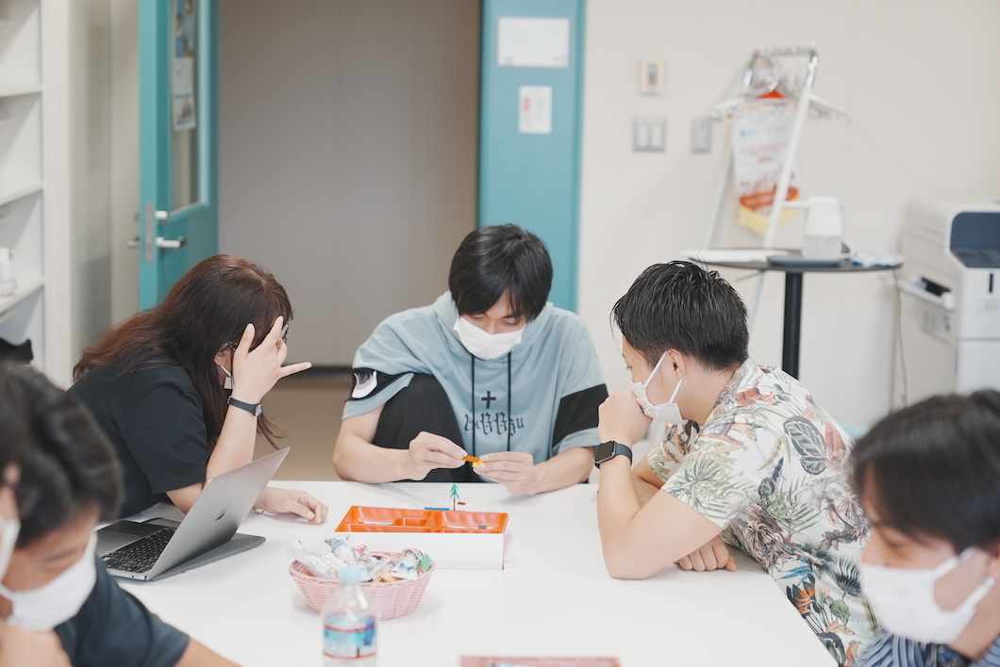
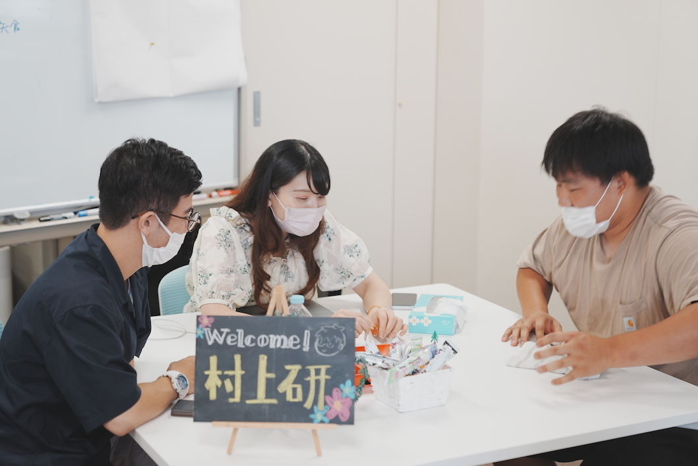
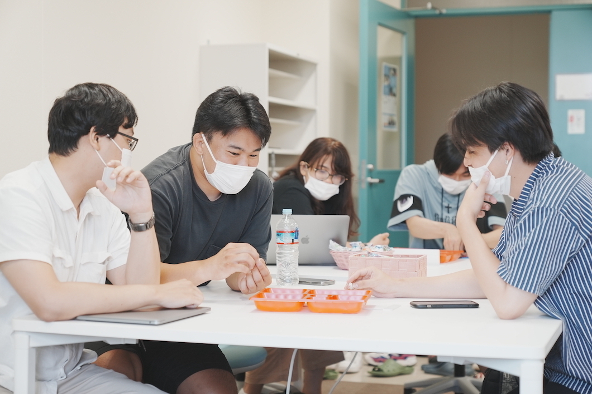

Laboratory Life
We had a face-to-face meeting with our third-year students


Overview
We had our first meeting with the newly assigned third-year students from the Fall Semester.
They were asked to write things related to themselves on self-introduction cards and then from there we delved deeper, exactly how interactive self-introductions are supposed to be ♪
After self-introductions, we played two new multilingual games unique to our multilingual laboratory.
We played a game called the "Mishearing Game" where Professor Pituxcoosuvarn says something in Thai and the students have to answer what they heard in Japanese, and a game called "Multilingual Three-Dimensional Telephone Game" in which participants used a language grid to translate Thai instructions and then competed to build a Lego according to those instructions.
Every team had a hard time deciphering the translated instructions in the "Multilingual Three-Dimensional Telephone Game"...
The third-year students were nervous at first, but by the end of the session they were able to open up with their seniors and were having a great time!

